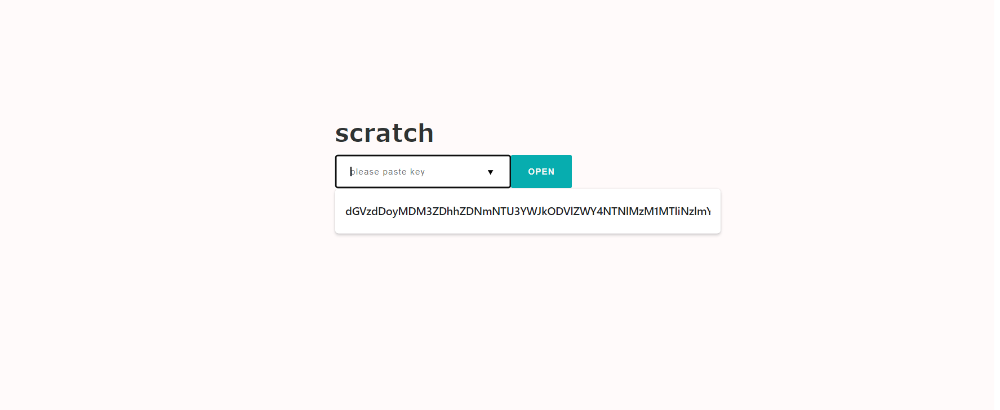
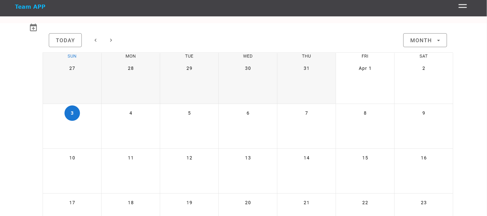

Create Scratch APP
In this tour, you can learn how you could make scratch APP using small-shell framework.
sudo /usr/local/small-shell/adm/gen -app
Type of APP (1.BASE | 2.FORM | 3.SCRATCH): 3
app_name: scratch
Type of Authentication (1.shared pass | 2.user key | 3.other | 4.none):
Types of small-shell Scratch APP
| Type | Auth | View | Data src | Code | Data Access |
|---|---|---|---|---|---|
| Shared APP | Shared Pass code | portal,table,form,log | specific databox | editable | Controllable per group |
| Key APP | Base64 encrypted Key | portal,table,form,log | specific databox | editable | Controllable per user |
| Other | Any | portal,table,form,log | specific databox | editable | Customize everything |
| None auth | No authentication | portal,table,form | specific databox | editable | Basically read only |
Required
Please setup Base APP beorehand refering to Quick Start
Common STEP
Each types of scratch APP have common STEP for launching APP, difference is mainly authentication method.
- Generate DataBox for datastore #gen -databox
- Generate Scratch APP #gen -app
- Update scripts
- Update portal #main.html.def
- Add user #key APP, other
- Add subAPP #connect additional databox if needed
Let's create scratch APP by following above steps.
Gen DataBox
Please generate databox that will be used for Scratch APP.
sudo /usr/local/small-shell/adm/gen -databox
# -> dialog will be started
Gen APP
Let's start to generate scratch APP named as just scratch with base64 key authentiaction. by the way you can use any other name as app_name. In this sample, we would like to use the name just scrach.
sudo /usr/local/small-shell/adm/gen -app
Type of APP (1.BASE | 2.FORM | 3.SCRATCH): 3
app_name: scratch
Type of Authentication (1.shared pass | 2.user key | 3.other | 4.none): 2
primary databox: item.db
Note
By the way if you don't need to use any databox, please input none or null as primary databox
Update codes
Then APP will be generated to directory that you already defined in Base APP dialog. you can update codes freely.
Target codes
# actionscripts
$bin (/var/www/bin)
# HTML descriptors
$descriptor(/var/www/descriptor)
Action script ($bin)
You can control accesible key. default parameter is all.
e.g) restrict data keys
sudo vi /var/www/bin/scratch_get.sh
--code--
# Target databox and keys
#keys=all
keys=item_name,description
--------
HTML descriptor ($descriptor)
Draft design of HTML is already generated, and you could customize them freely.
sudo vi /var/www/descriptor/scratch_main.html.def
sudo vi /var/www/descriptor/scratch_table.html.def
Add user to the APP
If you select Key APP, please add user for the APP. then you can get URL that can generate key for each end user.
sudo /usr/local/small-shell/adm/ops app:$app add.usr:$usr
e.g.) add "test" user for key APP name "scratch"
sudo /usr/local/small-shell/adm/ops app:scratch add.usr:test
-----------------------------------------------------------------
Initialize URL for naruo on team APP is created
-----------------------------------------------------------------
https://ec2-XX-XX-XX-XX.us-west-2.compute.XXXX.com/cgi-bin/shell.auth?initialize=cd5e7330e5fb92b4999f2a7801da7267c802c4109a7126be47d5049cd7d5c440,6bc0917d9510ae794ab5cb5d1e65834c09ad11fbd3d78db881a656c591d1604a
Connect to the APP
You can access to the APP with key, key will be inserted automatically using localstorage by javascript once initialized it on above url. e.g) https://ec2-XX-XX-XX-XX.us-west-2.compute.XXXX.com/cgi-bin/auth.scratch

Re-generate User key
If end user lost their key, you can generate URL for re-generating key.
sudo /usr/local/small-shell/adm/ops initialize.usr:test app:scratch
Update Pass code
If it's shared Pass code APP, you can update pass code by updating file directly
sudo vi /usr/local/small-shell/web/$app.code
Tagging on Scratch APP Table
You can add search tag in Base App table by ops command
sudo /usr/local/small-shell/adm/ops add.tag:$databox{key{word}} app:$app_name
e.g.)
sudo /usr/local/small-shell/adm/ops add.tag:tasks{status{on-going}} app:tasks

Change user permission
User permission could be changed ops command with app option.
# change to read only
sudo /usr/local/small-shell/adm/ops set.attr:$user{ro} app:$app
# change to read / write
sudo /usr/local/small-shell/adm/ops set.attr:$user{rw} app:$app
You can add any extension information to user attribute. following is exmaple to set attribute to ken as admin for management APP.
# user=ken app=management
sudo /usr/local/small-shell/adm/ops set.attr:ken{admin=yes} app:management
# confirm permission
sudo -u small-shell /usr/local/small-shell/bin/meta get.attr:management/ken{admin}
>yes
update descriptor
Put delete link under action links class
# e.g ) add delete function to scratch APP
# sudo vi /var/www/descriptor/sapp_get.html.def
sudo vi /var/www/descriptor/scratch_get.html.def
---code--
<div class="action_links">
<span><p style="cursor: pointer" onclick="window.open('./scratch?%%params&req=log_viewer&id=%%id', 'log_viewer', 'width=820,height=280')">Show data update history</p></span>
<span><p style="cursor: pointer" onclick="del_confirmation()">Delete</p></span>
---------
No auth APP
"No auth" app will take care of end users as guest. anyone can access to the table and datas by read only permission as guest. If you want to change to read write, please change user name from guest to other proper name in controller.
sudo vi /usr/lib/$app
--code--
#user_name="guest"
user_name="external_user"
--------
Sub APP
Basically scratch APP will connect to only 1 databox. Sub APP can add databox for your APP.
sudo /usr/local/small-shell/adm/gen -databox
#-> please create any databox
sudo /usr/local/small-shell/adm/gen -app
Type of APP (1.BASE | 2.FORM | 3.SCRATCH): 3
app_name: $subAPP@$parentAPP
please generate tasks as subapp in this tour.
-> app_name: inventory@scratch
-> primary databox: inventory.db
then you can get codes to integrate subapp with parentapp.
SUB APP template is successfully generated
1. APP controller
please add routing on /usr/lib/cgi-bin/scratch, when you add routing, please add them before *) routing.
#---------------------------------------------------------------------------------------------------------
"inventory.table") ../bin/inventory_table.sh session:$session pin:$pin user_name:$user_name page:$page table_command:$table_command;;
"inventory.get") ../bin/inventory_get.sh session:$session pin:$pin user_name:$user_name id:$id;;
"inventory.set") ../bin/inventory_set.sh session:$session pin:$pin user_name:$user_name id:$id;;
"inventory.del") ../bin/inventory_del.sh session:$session pin:$pin user_name:$user_name id:$id;;
"inventory.log_viewer") ../bin/inventory_log_viewer.sh session:$session pin:$pin id:$id;;
"inventory.file") ../bin/inventory_dl.sh session:$session pin:$pin id:$id;;
#---------------------------------------------------------------------------------------------------------
then you can access to the subapp
http://ec2-XX-XX-XX-XX.us-west-2.compute.XXXX.com/cgi-bin/scratch?&subapp=inventory&req=table
2. Meta link in the descriptor #html.def
+link to the APP #e.g please insert scratch_main.html.def
<a href="./scratch?%%session&subapp=inventory&req=table">link to subapp table</a>
Note
If you add rougin aftter [ *) echo "error: wrong request";; ] in the controller, everything will go to error routing.
meta link
You can generate link that can be used in the APP. please do not delete %%session in the link. then it will be replaced to a dynamic session and pin code. These links could be used in html descriptor of your APP.
sudo -u small-shell /usr/local/small-shell/bin/meta get.link:$app
for subapp
sudo -u small-shell /usr/local/small-shell/bin/meta get.link:$subapp@$parent_app
Import APP from template
Creating APP template is sub project of small shell. you can import APP template from git sub projects.
Team APP
This APP template could manage not only Team events, but also tasks, shared drive, bookmarks and inquiries as easy ticketing system.
Team APP funcions
| Function | type | Description |
|---|---|---|
| Portal | parent | Manage team events with portal calendar |
| Announcements | sub-app | Share announcement to the team |
| Tasks | sub-app | Manage team tasks {assignment,status,deadline,sync_calendar} |
| Inquiries | sub-app | Manage inquiryes involving external users {assignment, status, external_form, ticketing} |
| Drive | sub-app | Provide object storage for Team |
| Bookmarks | sub-app | Shared bookmarks |
| Inquiry_F | form | Inquiry form to Team from external user |
Link to code is here
cd $HOME
git clone https://github.com/naruoken/small-shell-apps
cd small-shell-apps/team_app
#if you already careated events and tasks, please delete it.
#rm -rf /usr/local/small-shell/databox/events
#rm -rf /usr/local/small-shell/databox/tasks
# Deploy Team APP, shell can createe databox as well
sudo ./deploy.sh
Add user to Team APP
Please add user to the APP, Then you can get key to access team portal.
sudo /usr/local/small-shell/adm/ops app:team add.usr:test

Ofcourse, you can update portal html by your self.
sudo vi /var/www/descriptor/team_main.html.def
If you want to add other databox to Team APP, please generate subAPP@team
sudo /usr/local/small-shell/adm/gen -app
Type of APP (1.BASE | 2.FORM | 3.SCRATCH): 3
app_name: $subapp@team
primary databox: $databox
then lets add routing to team APP
sudo vi /usr/lib/cgi-bin/team
also menu can be updated, please insert meta link to the menu
sudo vi /var/www/descriptor/common_parts/team_common_menu
Insert member list to the APP
Please select "mls" as data type in the gen dialog of data box creation. mls can import user list of your scratch APP.
key(col2) name: assignee
key(col2) label: Assignee
data type (text | select | radio | checkbox | email | num | tel | date | date-time | url | textarea | file | pdls | mls): mls
Oauth integration
Gen APP with other option
sudo /usr/local/small-shell/adm/gen -app
Type of APP (1.BASE | 2.FORM | 3.SCRATCH): 3
app_name: oauth_test
Type of Authentication (1.shared pass | 2.user key | 3.other | 4.none): 3
We made sample script that can be integrated with Oauth provider, please get each parameter from Oauth provider beforehand.
# input small-shell app name
app="oauth_test"
echo $app
cd $HOME
git clone https://github.com/naruoken/small-shell-apps
# select provider
provider="gcp"
#provider="okta"
cd small-shell-apps/oauth_sample/authorization_code
# UPDATE PARAMA
vi ./cgi-bin/${provider}_auth
#------------------------------------------------
# target params
exchange_token_uri=""
user_info_req_uri=""
redirect_uri=""
client_id=""
client_secret=""
target_claim=""
#-------------------------------------------------
# sample input
#------------------------------------------------
#exchange_token_uri="https://oauth2.googleapis.com/token"
#user_info_req_uri="https://www.googleapis.com/oauth2/v1/userinfo?"
#redirect_uri="http://XXX/cgi-bin/auth.oauth_test"
#client_id="XXX.apps.googleusercontent.com"
#client_secret="XXXX"
#target_claim="email"
vi ./descriptor/${provider}_oauth_form.html.def
#------------------------------------------------
# target params
var CLIENT_ID = '';
var REDIRECT_URI = '';
var OAUTH_END_POINT = '';
var SCOPE = '';
var STATE = '';
#-------------------------------------------------
# sample input
#------------------------------------------------
# var CLIENT_ID = 'XXXX.apps.googleusercontent.com';
# var REDIRECT_URI = 'http://XXXX/cgi-bin/auth.oauth_test';
# var OAUTH_END_POINT = 'https://accounts.google.com/o/oauth2/v2/auth';
# var SCOPE = 'https://www.googleapis.com/auth/userinfo.email';
# var STATE = 'statee';
#------------------------------------------------
# DEPLOY
authkey=`grep authkey= /usr/lib/cgi-bin/auth.$app | $SED "s/authkey=\"//g" | $SED "s/\"//g"`
echo $authkey
cat ./cgi-bin/${provider}_auth | $SED "s/%%authkey/$authkey/g" > /usr/lib/cgi-bin/auth.$app
cat ./descriptor/${provider}_oauth_form.html.def > /var/www/descriptor/${app}_auth_form.html.def
Then you can try to connect APP through Oauth.
https://$fqdn/cgi-bin/auth.oauth_test
Technical Tips
This is a random technical Tips. It could be hint for making your own scratch APP.
1. Get ID & key's value
You can get text name using ID and key using "none" format
@action script (shell)
# get name which will be issued
DATA_SHELL="sudo -u small-shell ${small_shell_path}/bin/DATA_shell session:$session pin:$pin"
book_name=`$DATA_SHELL databox:book.master action:get key:name id:$id format:none | $AWK -F ":" '{print $2}'`
2. ID search by using Name
You can also get ID using 100% matched text
@action script (shell)
# get book ID Based on the name
DATA_SHELL="sudo -u small-shell ${small_shell_path}/bin/DATA_shell session:$session pin:$pin"
book_id=`$DATA_SHELL databox:book.master command:show_all[match=name{$book_name}] format:json | jq '.[] | .id'| $SED -s "s/\"//g"`
3. Json insert to javascript instance
In terms of integration with javascript frameworks, we would like to recommend to insert bulk of json datas to javascript directly using %% tag because ajax with small-shell will take 1 or 2 sec for getting data.
Json technique (javascript in html def)
const events =
%%json
generator in bin/team_main.sh
sudo vi /var/www/bin/team_main.sh
--code--
## generate json
$DATA_SHELL databox:$databox command:show_all[filter=sync{yes}] format:json \
| $SED "s/{%%%%%%%%%%%%%%%%%}/'/g"\
| $SED "s/{%%%%%%%%%%%%%%%%}/%/g"\
| $SED "s/{%%%%%%%%%%%%%%%}/*/g"\
| $SED "s/{%%%%%%%%%%%%%%}/$/g"\
| $SED "s/{%%%%%%%%%%%%%}/\#/g"\
| $SED "s/{%%%%%%%%%%%%}/|/g"\
| $SED "s/{%%%%%%%%%%%}/\]/g"\
| $SED "s/{%%%%%%%%%%}/\[/g"\
| $SED "s/{%%%%%%%%%}/)/g"\
| $SED "s/{%%%%%%%%}/(/g"\
| $SED "s/{%%%%%%%}/_/g"\
| $SED "s/{%%%%%%}/,/g"\
| $SED "s/{%%%%%}/\//g"\
| $SED "s/{%%%%}/\&/g"\
| $SED "s/{%%%}/:/g" > ../tmp/$session/events
## then, just insert %%json to events
cat ../descriptor/team_main.html.def | $SED "s/^ *</</g" \
| $SED "/%%common_menu/r ../descriptor/common_parts/pintest_common_menu" \
| $SED "s/%%common_menu//g"\
| $SED "s/%%user_name/$user_name/g" \
| $SED "/%%json/r ../tmp/$session/events"\
| $SED "s/%%json//g"\
| $SED "s/%%params/session=$session\&pin=$pin\&databox=$databox/g"
-------
4. Disable portal
If your APP will not use portal, please change main request to table by adding these codes.
sudo vi /usr/lib/cgi-bin/$app
--code--
if [ "$req" = "main" ];then
req=table
fi
--------